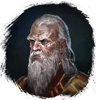
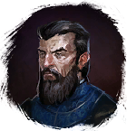
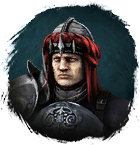

Ледяное ядро мощи
Предметы / С врагов
Открыть в интерактивной вики →
| Цена | 0 |
|---|---|
| Вес | 1 |
Описание
Сущность ледяных созданий из Дмортера. Предмет, нужный чародеям
Требуется для выполнения различных заданий и создания Эфирная лампа
Эфирная лампа
Требуется для покупки Средство криозащиты у
Средство криозащиты у
Вес: 1

Малус и
Алван для их таинственных исследований.Требуется для выполнения различных заданий и создания
Эфирная лампа Требуется для покупки
Средство криозащиты у 
ЗенлинВес: 1
| Сущность ледолаков из Дмортера. |
Дроп
Применение
|